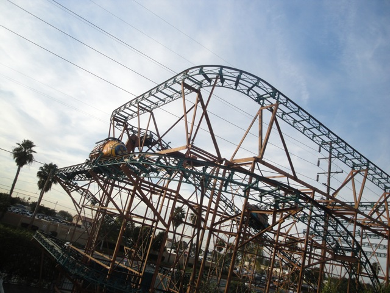
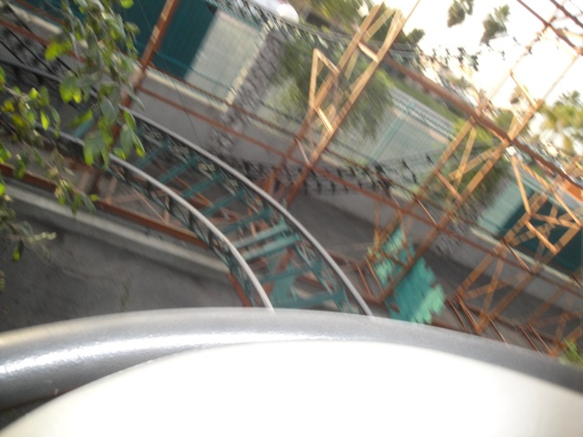
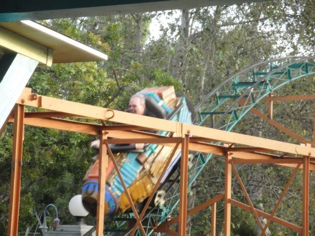
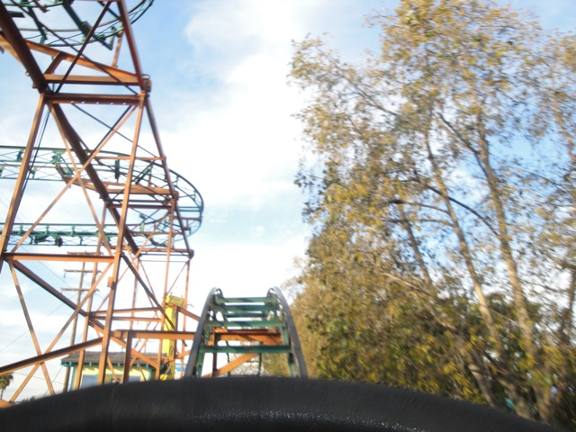
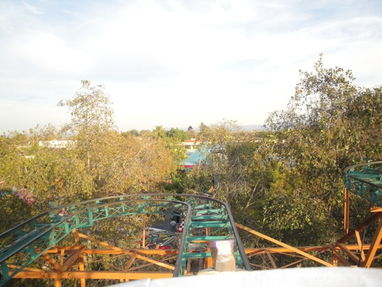
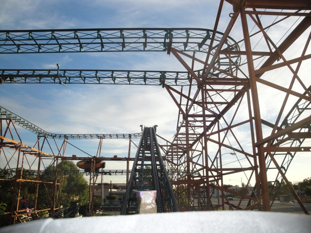

| |

Treetop Racers Review

For this review, we're going to have to travel back in time to when Adventure City had a decent coaster. Treetop Racers. Now this was just a Wild Mouse, but for this type of park, its a pretty big roller coaster. Anyways, you get in the car, go around a tight turn, and head up the lifthill. You get a pretty good view of what you're about to go through when we suddenly reach the top. We then make a quick left turn, get a decent view of Adventure City. And then we go through another sharp left turn that leads us into some straight track. All right. Its nice and relaxing for now. Nothing horrifying yet. And then, yep. Another sharp turn. And at this point, we're in your typical switchbacks, like you normally see on a wild mouse. We go through some straight track out towards the street, get a nice view of the lovely Buena Park Streets, and then...BAM!!! Sharp Turn!!! Now these sharp turns actually feel different from most wild mouse coasters due to the cars they use on Treetop Racers. These cars feel more like they're going to tip over more due to their design than typical Wild Mouse cars, and that just makes it all the more fun. =) Now its just the same old straight track, sharp turn, etc. But after one of the peices of straight track, we make a sharp 90 degree turn, go down a small dip before going down a decent sized drop. We then head up a small hill that of course leads straight to another sharp turn. This of course leads to some straight track, a small turn before dipping back down. We then go through a small bunny hop. Its not intense or anything, but hey. Its fun. We then rise up another small hill and go through a small turn and some straight track. We go through some trim brakes here, yeah, its a bummer, but come on. Its a kiddy park. Are you really surprised that they tamed it down? We then go through a small turn and down a small drop. Its not that fast, but hey. Its fun. We then go up a small bunny hop. While its not intense or anything, it is fun, particuarly since it has a great headchopper effect with the ride up above. We then go through another turn, through more trim brakes. Hey, I'm just glad Adventure City has a ride like this. And now we go down a small downward helix. Again, not intense, but a lot of fun. And then we glide into the final brakes. Treetop Racers is a very fun coaster and a good Wild Mouse. Its great for the park that its in and yeah. I know anyone coming here is gonna ride this thing, so there's no need for me to tell you to.
6/10
Location: Adventure City
Operated in Australian Fairs from some unknown year to 1998
Opened at Adventure City in 1999
Died: 2012
Built by: Miler Coasters
Last Ridden: January 1, 2011
Treetop Racers Photos






|